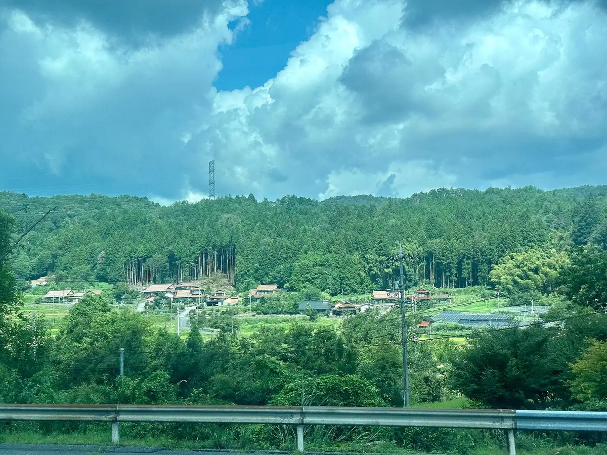
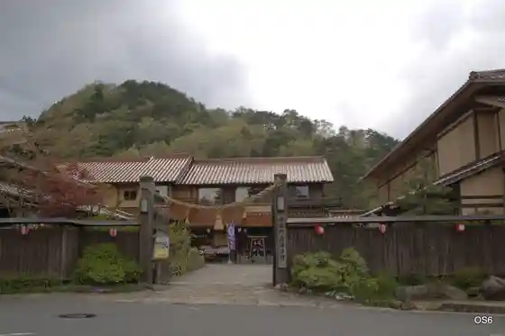
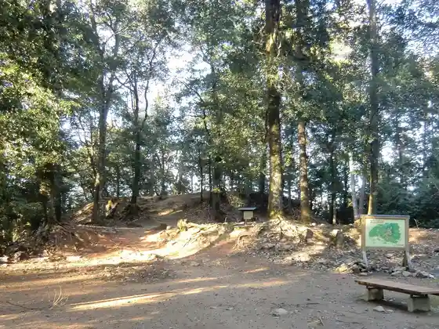
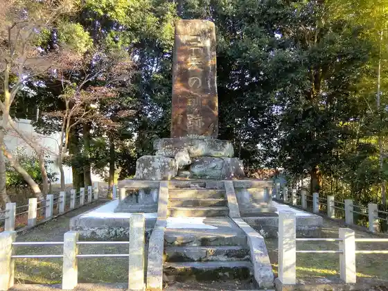
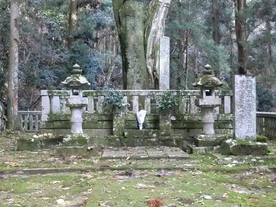

Akitakata
Akitakata · Hiroshima
Akitakata
Highlighted on the Hiroshima map.

Stay
Takamiya Yu Forest Fukuju So
Kagura Monzen Toji Village
Gono no Ie Akitakata
Satoyama Hanare
Dining
Ramen Choshu
Sanparasoru
Maguro Senmon
Nyanko Ya
Nakamura
Jomon Aisu Hitoha Kan
Kitchin Yoshida
Miwa
Yamazaki
Taiwan Ryori Fukusho Jun Yoshida Mise
Tsukushimbo
Fumichan Ie no Tamago
Nagahama Ramen Hakata Ya Yoshida Mise
Hongo Parking Area (Nobori Sen) Sunakkukona
Sharumu O Konomi Yaki Mise
Sasaki Tei
Onsen
Takamiya Yu Forest Fukuju So Roten Hinoki Furo
Kagura Monzen Toji Village Tennen Onsen
Gono no Ie Akitakata Rotemburo (1)
Satoyama Hanare Furo
Sights
Kagura Monzen Toji Village (Kanko)

Yoshida Koriyama Castle Ruins

Mitsuya no Kun Hi

Mori Motonari Hakasho

Hyakuman Isshin no Hi